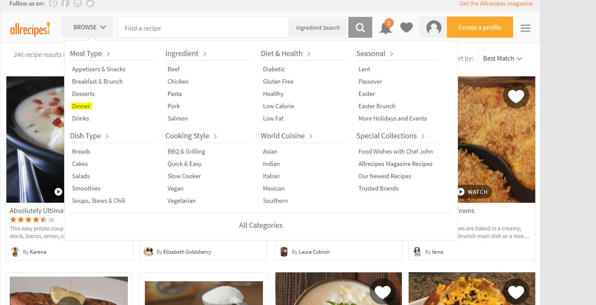

The Website:
Learning to cook used to be a lot harder. I'm serious; in the dark ages before the internet in order to learn how to cook you had to either find someone to teach you or find a big cookbook with lots of pictures to get you through it.
Thankfully, modern culinary adventurers have a host of websites flush with descriptions, photos, and sometimes videos to guide them through recipe after recipe.
Placeholder
Ever since I foundallrecipes.comI've kept coming back to it. There is a bit of a learning curve, but let's see what the users think of it.
Screenshot of the allrecipes HomepageThe Testers
For this report, I enlisted the help of some brave volunteers:
- The Server - Male 20's, Frequent Internet User, Favorite Website: Youtube
- The Teacher - Female 50's, Infrequent Internet User, Favorite Website: Yahoo
- The Accountant - Male 50's, Infrequent Internet User, Favorite Website: Zillow
- The Student - Male 20's, Frequent Internet User, Favorite Website: BBC News
Scenario 1
Screenshot of allrecipes sign up windowYou're new to the page and want to set yourself up with an online recipe book. How do you do that?
Talk about results
Placeholder
bonus points to the site:
Screenshot of allrecipes pop up windowScenario 2
You're at home. The dreaded call: someone is coming over, they're on their way. What are you going to feed them? Check the fridge: you have-
- A Potato
- An Onion
- Some Chicken
- Some Cream
Screenshot of the EWU Computer Science Landing Page
Thank goodness the spices are stocked! Now, what can you make for dinner? How about dessert?
Scenario 3
It's dinner time, but you don't know what to make....can you find something for dinner? What about lunch?
 These are the same website, but it's hard to tell with all of the differencesScenario 4
Your cake was a hit but now everyone wants the recipe...how are you going to go about sharing it?
These are the same website, but it's hard to tell with all of the differencesThere is always a lot of information a university needs to have available to their students. This website is not perfect; but if they continue to modernize the pages, they will have a very nice, crisp portal to present.
Conclusion
Your cake was a hit but now everyone wants the recipe...how are you going to go about sharing it?